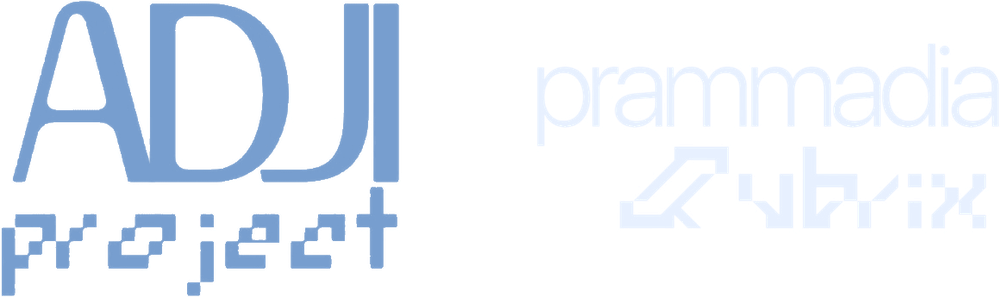

Hardware yang berpikir, software yang bekerja.
Embedded, IoT, dan otomasi industri. Dari skematik sampai terpasang di lapangan.
Mulai proyekLihat karyaSatu orang dari rangkaian sampai dashboard.
Tidak ada yang hilang di antara tim hardware dan tim software, karena keduanya saya kerjakan sendiri.
IoT dan embedded
Node sensor dan kontroler di ESP32, Arduino, atau STM32, lengkap dengan firmware dan konektivitas nirkabel yang stabil.
Desain PCB
Skematik, layout, dan prototipe di KiCad, Altium, atau EasyEDA sampai siap dikirim ke pabrik.
Monitoring dan otomasi
Integrasi Modbus, PLC, dan SCADA, dengan alert lewat Telegram atau web.
Web dashboard
Antarmuka web yang mengubah data mentah perangkat menjadi sesuatu yang bisa dipakai klien.
Saat intuisi insinyur bertemu presisi mesin, perangkat mulai hidup.
dua dunia, satu tangan. firmware dan antarmuka bergerak sebagai satu.
Lihat karyaPapan gateway yang bisa Anda putar.
Seret untuk memutar. Geser slider untuk memisahkan lapisan: tembaga bawah, FR4, solder mask, silkscreen, lalu komponen.
Stage 1-1: Board.
Teknisi bertopi kuning menyeberangi PCB. Tahan lompat untuk lebih tinggi, injak bug, ambil koin dari blok, dan sampai ke bendera.
Sinyal yang bisa Anda atur.
Ubah frekuensi dan duty cycle di osiloskop mini. Lalu simulasikan gangguan pada jaringan tiga fase dan lihat alert Telegram masuk.
Masalah yang sudah saya selesaikan.
Klik proyek untuk melihat skema dan detail teknisnya.
Punya proyek yang ingin dibangun?
Ceritakan apa yang ingin dibuat atau diperbaiki. Saya balas dengan langkah berikutnya yang jelas.
arcenixtermux@gmail.comWhatsAppLinkedInInstagram